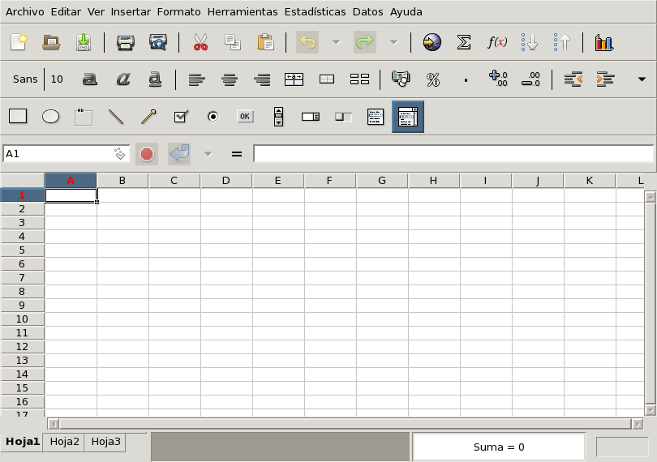

LibreOffice es un juego de aplicaciones de oficina que ofrece, prácticamente, la misma funcionalidad de MS-Office, un formato de documentos estándar (ISO) y facilidades para importar y exportar en formatos de MS-Office.

Lo puede iniciar desde el escritorio con botón derecho Oficina > LibreOffice o bien desde una terminal con
soffice
Después de instalarlo y ejecutarlo por primera vez arrancará en inglés, para configurarlo en español vaya al menú Tools > Options > Language y elija Español y Español/Colombia en las casillas de idioma que aparecen al lado derecho.
Incluye el procesador de texto writer (que
puede iniciar desde una terminal con swriter),
la hoja de cálculo calc (que inicia desde una
terminal con scalc), el creador de
presentaciones impress (que inicia con
simpress desde un terminal) y el programa para
diagrama draw (que puede iniciar con
sdraw). Puede aprender más sobre este
procesador en
libreoffice-basico
Para operar con hojas de cálculo incluye gnumeric-1.12.49, que también puede abrir y guardar en OpenDocument y en formatos de Microsoft Office.
La funcionalidad de un procesador de palabra, así como la básica
para hacer presentaciones también las ofrece LaTeX (ver
Sección 8.2.1, “LaTeX”). Parte de la funcionalidad de
una hoja de cálculo la tiene desde una terminal
sc. También puede usar
magicpoint para hacer presentaciones. Sin
embargo para usar estas herramientas se requiere aprender formas
diferentes de operar.
Para emplear TeX, LaTeX y asociados instale texlive y gv:
doas pkg_add $PKG_PATH/&p-texlive_base;.tgz
doas pkg_add $PKG_PATH/&p-texlive_texmf-full;.tgz
doas pkg_add $PKG_PATH/gv-3.7.4p0.tgz
Puede configurar tamaño del papel, separado en sílabas y otros
detalles con texconfig.
A continuación se incluye un mini-tutorial de LaTeX adaptado de
AALinux, por otra parte puede consultar algo más sobre
gv en la sección
Sección 13.2.1, “Uso de una impresora ya configurada”.
LaTeX es una extensión a un sistema llamado TeX, desarrollado para escribir documentos de matemáticas. A continuación se presenta un ejemplo de un documento LaTeX y el resultado que se obtiene tras procesarlo.
\documentclass{article}
\usepackage[T1]{fontenc}
\usepackage[spanish]{babel}
\begin{document}
\author{Rupertino Gonzales}
\title{Algunas posibilidades de LaTeX}
\maketitle
\section{Elementos}
Puede estructurar el documento en capítulos, secciones, etc.
Este texto es el contenido de la primera sección de este ejemplo,
puede escribir cada párrafo en líneas consecutivas.
\subsection{Ayudas}
Puede lograr efectos como \emph{Itálicas}, \textbf{negrillas} o
cambios en el \textsf{tipo o {\small tamaño} de letra} (note
como se anidaron ambientes en este ejemplo).
Puede crear listas:
\begin{itemize}
\item Primer elemento de lista.
\item Segundo elemento de lista.
\end{itemize}
o tablas
\\
\begin{tabular}{|l|r|} \hline
Título 1 & Título 2 \\\hline
elemento 1 & elemento 2 \\\hline
\end{tabular}
\subsection{Ecuaciones}
LaTeX es un experto en esta materia:
\[ \int_{x=-\infty}^{\infty}e^{-|x|} \]
\end{document}
LaTeX ofrece plantillas para varios tipos de documentos:
artículo, reporte, libro y ofrece el concepto de ambiente para
indicar como presentar cierta información de acuerdo a la
plantilla. En el ejemplo presentado, el tipo de documento es
artículo (lo indica la línea
documentclass{article}), y uno de los
ambientes empleados es tabular, que genera
una tabla.
Una vez edite un documento puede procesarlo con LaTeX para
obtener un archivo DVI, por ejemplo para generar el archivo
documento.dvi a partir de
documento.tex:
latex documento.tex
latex Programa que convierte un archivo LaTeX a DVI.
xdvi Programa para ver un archivo DVI en pantalla.
El archivo DVI es apropiado para imprimir, puede imprimirlo con
una orden como dvilj,
dvidj o un nombre análogo que corresponda a
su impresora [9]. Para visualizar un archivo DVI puede emplear la
orden xdvi:
xdvi documento.dvi
dvi2ps Programa para convertir un DVI en PostScript.
y para convertirlo a PostScript puede emplear
dvi2ps:
dvi2ps -c documento.ps documento.dvi
A continuación se presenta como se ve el ejemplo de esta sección
con el programa xdvi.
Existen además otros programas para convertir de LaTeX a HTML como latex2html y HeVeA. Puede encontrar más información de latex2html en http://ctan.tug.org/ctan/tex-archive/support/latex2html/ y de HeVeA en http://pauillac.inria.fr/hevea/.
Puede configurarse tanto DocBook SGML 4.4 y procesarse con las
hojas de estilo DSSSL, o bien DocBook XML 4.4 y procesarse con
xsltproc.
Instale los paquetes openjade, docbook y docbook-dsssl:
doas pkg_add $PKG_PATH/docbook-4.5p3.tgz
doas pkg_add $PKG_PATH/docbook-dsssl-1.79.tgz
doas pkg_add $PKG_PATH/openjade-1.3.3pre1p6.tgz
Esto bastará para hacer conversiones de DocBook SGML a HTML por ejemplo si su hoja de estilo DSSL es “marcos.dsl” y va a convertir el documento DocBook marcos.xml:
openjade -t sgml -ihtml -d marcos.dsl#html marcos.xml
Para convertir a PostScript además de los paquetes anteriores requiere el paquete texlive (ver TeX y Ghostview) y el paquete jadetex
Como parte del paquete
`se instalará el DTD de DocBook XML 4.4 en el directorio/usr/local/share/xml/docbook. Es recomendable que cree el archivo/usr/local/share/xml/catalog`
inicialmente con:
CATALOG "docbook/catalog"
y que agregue en este archivo la ruta de otros catálogos XML o de DTDs.
Para transformar documentos XML con hojas de estilo XSL puede
emplear un procesador como xsltproc, que está
incluido en el paquete libxslt. Esta
herramienta recibe el nombre del archivo XSL y el nombre del
archivo XML por transformar. También puede recibir la opción
--catalogs que indica usar los catálogos de
la variable SGML_CATALOG_FILES (se separan
unos catálogos de otros con el carácter “:”), o la
opción --nonet que indica no descargar DTDs
de Internet (los catálogos deben resolver todos los
identificadores públicos).
Las hojas de estilo XSL para transformar DocBook XML en HTML y
en XML-FO (Formatting objects, apropiado para imprimir con un
procesador FO) se instalan con el paquete
`y quedan en/usr/local/share/xsl/docbook`.
Una vez instalados todas las partes puede procesar el archivo
ejemplo.xdbk:
<?xml version="1.0" encoding="UTF-8"?>
<!DOCTYPE article PUBLIC "-//OASIS//DTD DocBook XML V4.1.2//EN" "/usr/local/share/xml/docbook/4.4/docbookx.dtd" >
<article lang="es">
<title>articulo</title>
<articleinfo>
<authorgroup>
<author>
<firstname>Nombres</firstname>
<surname>Apellidos</surname>
<authorblurb>
<para><address>
<email>micorreo@pasosdeJesus.org</email>
</address></para>
</authorblurb>
</author>
</authorgroup>
<abstract>
<para>Resumen</para>
</abstract>
<legalnotice>
<para>nota legal</para>
</legalnotice>
</articleinfo>
<sect1 id="s1">
<title>Primera sección</title>
<para>Parrafo</para>
</sect1>
</article>
con una hoja XSLT de DocBook con:
export SGML_CATALOG_FILES="/usr/local/share/xml/catalog"
xsltproc --catalogs --nonet /usr/local/share/xsl/docbook/html/chunk.xsl ejemplo.xdbk
[9]
Si usa ksh puede ver una lista de
posibles programas que le permitan imprimir, tecleando
dvi desde un intérprete de órdenes y
presionando Tab dos veces.